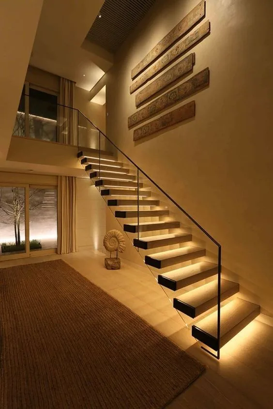
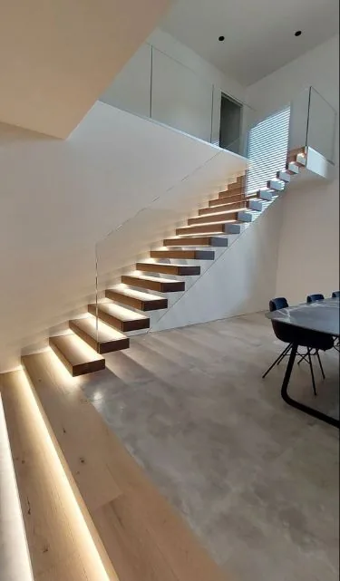
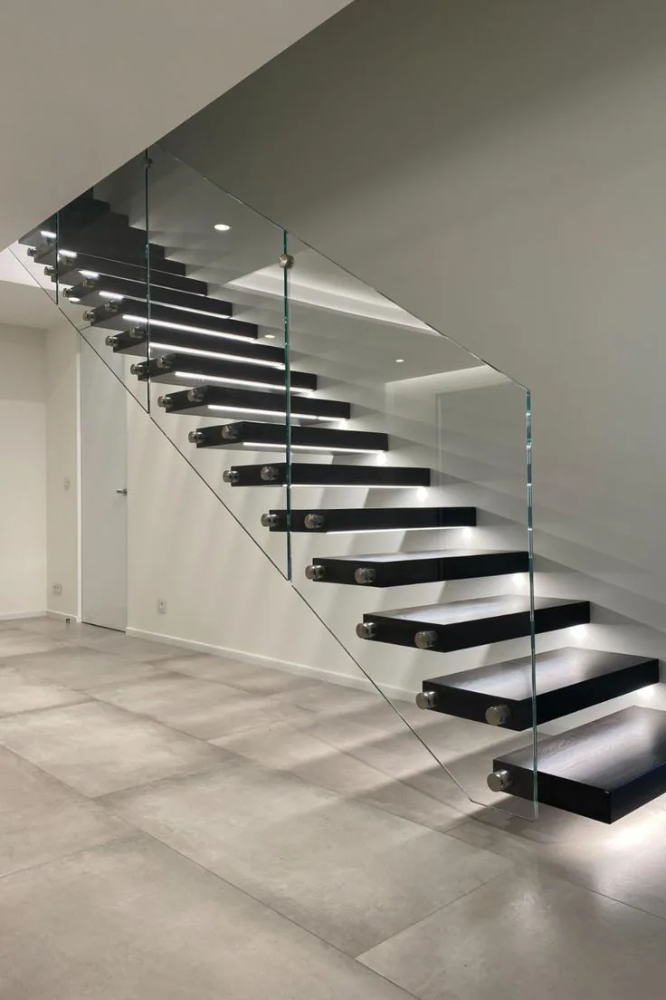
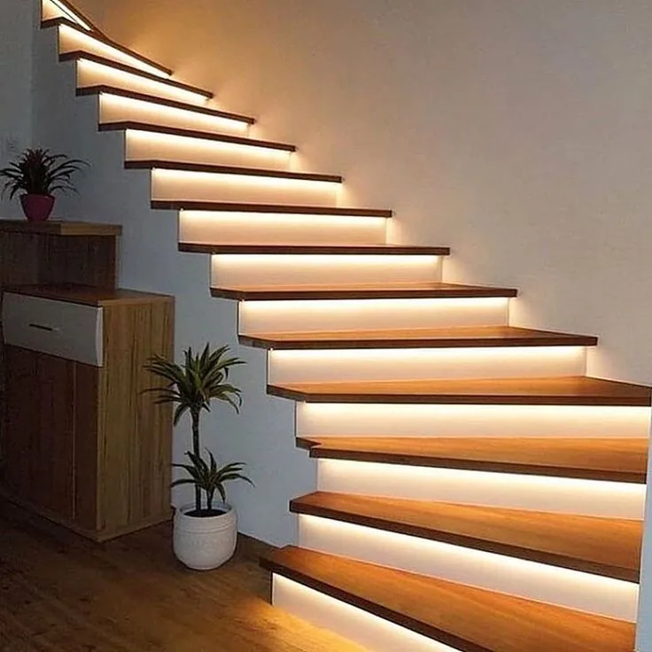
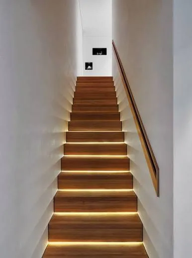

Diseño a medida
Soluciones únicas adaptadas a cada espacio, necesidad y estilo arquitectónico.
La excelencia en metal, vidrio y luz. Creamos escaleras únicas, diseñadas para transformar espacios con estilo, precisión y la más alta calidad constructiva.
Cada escalera es diseñada por nosotros y fabricada por un equipo técnico especializado en estructuras, madera, metal, vidrio e iluminación.
Cada proyecto es único y por eso cada escalera que creamos también lo es. Combinamos ingeniería, materiales nobles y luz para lograr piezas que definen espacios.
Soluciones únicas adaptadas a cada espacio, necesidad y estilo arquitectónico.
Trabajamos con acero inoxidable, vidrio laminado, madera y terminaciones premium.
Integración de iluminación LED para destacar cada línea, volumen y recorrido.
Montaje profesional con máxima precisión y respeto por cada detalle.
Diseños modernos de alto impacto visual, con estructura metálica oculta o liviana, peldaños en madera, piedra sinterizada efecto mármol, vidrio e iluminación integrada.
Para obra nueva o reforma: revestimientos, barandas, terminaciones, iluminación y mejora estética de escaleras interiores existentes.
Diseños aplicados en proyectos concretos: estructura, vidrio, madera, metal e iluminación pensados como una sola pieza.





El diseño técnico y la precisión artesanal se integran. Más que una escalera, una pieza de arquitectura.
Por eso cada escalera que hacemos es tan sólida como hermosa. Diseñamos y fabricamos estructuras seguras, durables y en equilibrio perfecto.
Estructuras diseñadas con precisión para máxima seguridad y estabilidad.
Componentes de primera línea para uniones firmes y duraderas.
Materiales de alta calidad para resistir el paso del tiempo.
Procesos propios con estándares de calidad en cada fase de producción.
Integramos líneas LED, iluminación lateral y luz cálida arquitectónica para marcar el recorrido, realzar el volumen y transformar la percepción del espacio. Una escalera bien iluminada no solo se ve mejor: se habita mejor.
El diseño se adapta al lugar, al uso y a la estructura existente. Cada línea puede trabajarse como proyecto nuevo o como mejora de una escalera ya construida.
Un proceso claro, comprometido y transparente para que disfrutes el resultado, sin preocuparte por nada.
Escuchamos tu idea y necesidades.
Desarrollamos el proyecto técnico y estético.
Propuesta clara, detallada y a medida.
Producción propia con control de calidad.
Montaje profesional y puesta en valor final.
Hablemos de tu proyecto y empecemos a diseñar algo único.
Nos apasiona lo que hacemos. Por eso buscamos precisión, belleza y perfección en cada detalle.
Queremos que cada escalera sea funcional, pero también capaz de transmitir belleza, presencia y carácter.
Nuestra misión es que puedas contemplar el arte de una manera diferente: integrado a tu casa, a tu recorrido y a tu forma de habitar el espacio.
Estamos para asesorarte. Con solo algunas consultas podemos cotizar tu escalera en el momento.